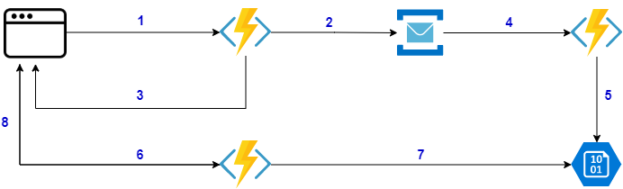

Cloud services suggest new ways for implementing our applications. However, for some long-running jobs like generating a PDF or performing a complex calculation, there is not much we can do to make them run faster rather than scaling up/out. In this article, we look at two patterns for handling such requests.
Introduction
In today's world, users expect applications or websites to be fast, and usually, a latency of around 100 milliseconds is considered reasonable. We can improve the latency of services by avoiding chatty APIs or leveraging materialised views for more expensive queries. However, for some long-running jobs like generating a PDF or performing a complex calculation, there is not much we can do to make them run faster rather than scaling up/out. In this article, I'm going to take a look at two patterns for handling such requests.
In a typical web application, most of the communications between the client and the server are synchronous. By synchronous here, I mean the response arrives back over the same connection. The client (i.e. the browser) sends an HTTP request to the back-end, the back-end returns the result in the same call. This works well for quick resources that the user doesn't notice any significant delays, like fetching some data from the database. It is also common that some services depend on other services to compose their response, leading to a greater overall latency from the users perspective. However, we should resolve such issues using different patterns like materialised view or caching or by scaling out the backend which is out of the context of this article. There are other types of services that their response cannot be cached and needs to be generated specifically for the incoming request. The latency in this scenario could come from many factors such as dependency on other external services or the task itself being a CPU-intensive task. In this category we can divide our calls into two sub-categories:
Outbox Pattern
Fixing the request without a response is simple. The first step is to return immediately to the client and let the backend continue processing in the background. Please note that we are not awaiting on SendEmailAsync
public static IActionResult Run([HttpTrigger] HttpRequest request)
{
...
SendEmailAsync();
return new AcceptedResult();
}
This code returns immediately with HTTP 202 (ACCEPTED) so the user doesn't need to wait until the email is sent. However, if the email service is unavailable, depending on the implementation of SendEmailAsync method, the user either receives an error or the email will never be sent. Both of these outcomes are not ideal. Unless sending the email is the primary intention of the user, returning an error is not a good experience since users should be able to submit successfully regardless of the underlying services which don't affect them directly. We can resolve this problem by using the "Outbox" pattern which guarantees at-least-once delivery.

In the above diagram:
- User sends the request.
- Back-end service enqueues a message to the queue with email payload.
- Regardless of the email service status, the user immediately receives an
ACCEPTEDresponse. - Email service checks for messages and sends the email.
In the following code we push the request of sending email into the queue, and return immediately:
public static async Task<IActionResult> Run(
[HttpTrigger] HttpRequest request,
[ServiceBus("emailqueue", Connection = "connection")] IAsyncCollector<Message> emailMessage)
{
...
Message message = new Message(GetBytes(emailPayload));
await emailMessage.AddAsync(message);
return new AcceptedResult();
}
You may argue that if the message broker is temporarily unavailable then again we're facing the same issue. For addressing this concern, we can use a local database with an outbox table and store the message first in this database then another service enqueues the messages from this database:
public static async Task<IActionResult> Run(
[HttpTrigger] HttpRequest request,
[ServiceBus("emailqueue", Connection = "connection")] IAsyncCollector<Message> emailMessage)
{
...
var outboxItem = new OutboxItem(emailPayload);
await outboxRepository.Insert(outboxItem);
return new AcceptedResult();
}
As you can see with this change our service doesn't rely on the queue for completing its job and we write the messages to the outbox table of the local database. Since the database is local to our service, there is a lower chance that the database is unavailable comparing to an external entity that has to be accessed over the network. The following function will trigger on queue event and will send the email. In this case, if the email sender service is offline we won't lose the message and it'll eventually send the email once it's back online.
public static void Run(
[ServiceBusTrigger("emailqueue", Connection = "connection")] Message emailMessage)
{
SendEmailAsync(emailMessage);
}
Outbox pattern is a simple yet powerful pattern, instead of performing the action directly we push it in a queue and offload the execution of the job to another service. We can use this pattern everywhere we need a guaranteed delivery.
Asynchronous Request-Reply Pattern
Similar to the outbox pattern, in this pattern we are going to decouple the backend and the processing worker. But since we want to provide a way for the frontend to query about the result of the task, we need to return a status check endpoint to the client as well.
In the above diagram:
- User sends the request.
- Back-end service enqueues a message to the queue with pdf payload.
- User receives an
ACCEPTEDresponse with the check status URL. - PDF generator service fetches the request messages and generates the PDF.
- PDF generator service stores the PDF into Blob storage.
- Client calls the request status endpoint,
- Request status checker tries to get the PDF.
- If the PDF exists, it returns it. Otherwise, it returns
ACCEPTEDresponse and the client needs to check again.
In the following code, we enqueue the message and add the status URL to the location header of the response:
public static async Task<IActionResult> Run(
[HttpTrigger] HttpRequest request,
[ServiceBus("pdfqueue", Connection = "connection")] IAsyncCollector<Message> pdfMessage)
{
...
string requestId = Guid.NewGuid().ToString();
string host = Environment.GetEnvironmentVariable("WEBSITE_HOSTNAME");
string statusUrl = $"http://{host}/api/RequestStatus/{requestId}";
Message message = new Message(GetBytes(pdfPayload));
message.UserProperties["RequestId"] = requestId;
message.UserProperties["RequestSubmittedAt"] = DateTime.UtcNow;
message.UserProperties["RequestStatusURL"] = statusUrl;
await pdfMessage.AddAsync(message);
return new AcceptedResult(statusUrl);
}
The following code, checks for the generated PDF in the blob storage, if the PDF exists it returns it otherwise it returns ACCEPTED response with the status check URI. Please note that instead of a fixed retry time, we can implement a backoff function to avoid hitting this endpoint frequently.
public static async Task<IActionResult> Run(
[HttpTrigger(Route = "RequestStatus/{id}"))] HttpRequest request,
[Blob("pdfs/{id}.pdf", FileAccess.Read, Connection = "connection")] CloudBlockBlob pdfBlob,
string id
{
...
if (await pdfBlob.ExistsAsync())
{
return (ActionResult)new OkObjectResult(await pdfBlob.DownloadTextAsync());
}
string host = Environment.GetEnvironmentVariable("WEBSITE_HOSTNAME");
string statusUrl = $"http://{host}/api/RequestStatus/{id}";
return (ActionResult)new AcceptedResult(statusUrl) { RetryAfter = 10 };
}
The following code receives the queue message and generates the PDF asynchronously then stores it in storage so the client can download it:
public static void Run(
[ServiceBusTrigger("pdfqueue", Connection = "connection")] Message message
[Blob("pdfs", FileAccess.ReadWrite, Connection = "connection")] CloudBlobContainer pdfBlob)
{
var id = message.UserProperties["RequestId"] as string;
var pdf = GeneratePdf(queueMessage);
CloudBlockBlob cloudBlockBlob = pdfBlob.GetBlockBlobReference($"{id}.pdf");
cloudBlockBlob.UploadFromByteArrayAsync(pdf, 0, pdf.Length);
}
Conclusion
Cloud services suggest new ways for implementing our applications. They encourage us to use more decoupled services talking to each other. However, we should be careful as we've seen this separation brings additional complexity. Before using any patterns, we should consider all the impacts they're going to have on our application. Even the slightest change in the requirements may make these patterns unsuitable.